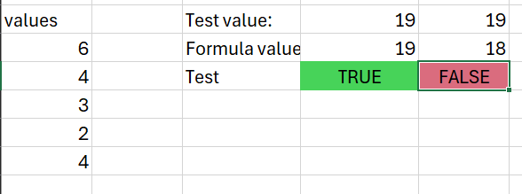
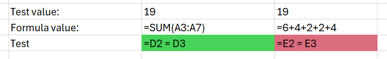

library(testthat)
library(tibble)Test driven development
R
testing
intermediate
excel
Intro
- this session is about test-driven development (TDD)
- we’ll start with a bit of chat and some polling about testing
- then we’ll do a bit of explanation to introduce TDD
- and most of the session is about showing a simple implementation of TDD in Excel, and a slightly less simple implementation in R
Testing your work
- poll: who tests their work at all?
- please share in the chat ways that you test your work
- poll: who has a formal process for that testing?
- please share in the chat a bit on your testing process
- poll: who shares that testing process with their colleagues?
TDD-what?
- (before all that polling) my guess is that…
- nearly everyone will test their work in some way, but that
- most of that testing will be ad hoc / informal
- and that more formal testing is quite rare
- and I’ll guess that no-one has a standard shared testing process in their group
TDD = test driven development
- work should go like this:
- have an idea for a new thing
- develop something to do that thing
- test to check that the thing is done
TDD = test driven development
- but too often the work goes:
- have an idea for a new thing
- develop something to do that thing
- have an idea for a new thing
- …
TDD = test driven development
- what if we reversed the usual order?
- have an idea for a new thing
- write a test to check that the thing is done
- develop something to pass that test
- this also might make testing more fun, given a pretty loose definition of fun
We don’t need fancy tools to do TDD
- it’s perfectly possible in Excel
- imagine we’re writing a formula to find out something about our data (maybe totaling a column)
- we could take part of our data
- calculate a test value by hand (say, by adding up all the values in our test data)
- then using that test value to check that our formula is returning the right result
- you could even go mad and use conditional formatting etc to check that’s happening properly


Recap
- decide what to do
- write a test to check that thing
- develop to pass the test
R time
- in
testthat, tests are built of expectations
expect_equal(2 * 2, 4)
expect_identical(1L, 1L)Tale of two great expectations
test_that("Testing that numbers work properly", {
expect_equal(2 * 2, 4, label = "Multo")
expect_identical(1L, 1L, label = "Class!")
})Test passed 🥳Lots of expectations
expect_setequal(1:3, c(1,2,3))
fnarp = tibble(a = c(1, 2, 3))
glarp = tibble(a = c(1, 2, 3))
expect_mapequal(fnarp, glarp) # for named objectsGrouping into tests
test_that("Testing that sets work properly", {
expect_setequal(1:3, c(1,2,3))
expect_mapequal(fnarp, glarp)
})Test passed 🎉test_that("Testing classes", {
expect_that(mtcars, is_a("data.frame"))
expect_that(1:5, is_a("integer"))
})Test passed 😸Context
- context = groups of tests
- previously important to R testing
- now, use files instead
Test files
- put all tests in a file
# R/tests.R
test_that("Testing that numbers work properly", {
expect_equal(2 * 2, 4, label = "Multo")
expect_identical(1L, 1L, label = "Class!")
})
test_that("Testing that sets work properly", {
expect_setequal(1:3, c(1,2,3))
expect_mapequal(fnarp, glarp)
})- run with
testthat::test_file()
testthat::test_file("R/tests.R")
══ Testing tests.R ═════════════════════════════════════════════════════════════
[ FAIL 0 | WARN 0 | SKIP 0 | PASS 0 ]
[ FAIL 0 | WARN 0 | SKIP 0 | PASS 1 ]
[ FAIL 0 | WARN 0 | SKIP 0 | PASS 2 ]
[ FAIL 0 | WARN 0 | SKIP 0 | PASS 3 ]
[ FAIL 0 | WARN 0 | SKIP 0 | PASS 4 ] Done!Bit of live development
- Reverse and Invert
- “reverse and invert all integer values” in a vector
- tests first!
- granular tests: quick, small and simple
- basic code: just pass the test
- add test, pass, refactor, repeat
- I ended up with something like
as.integer(intToUtf8(rev(utf8ToInt(as.character(n)))))